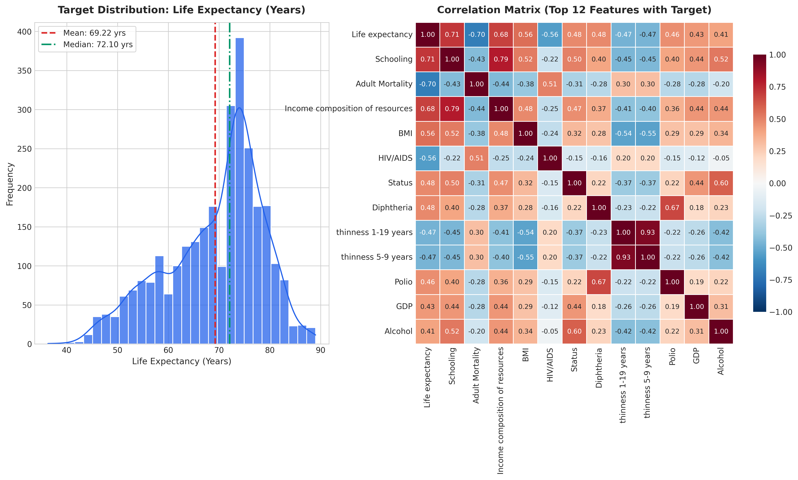
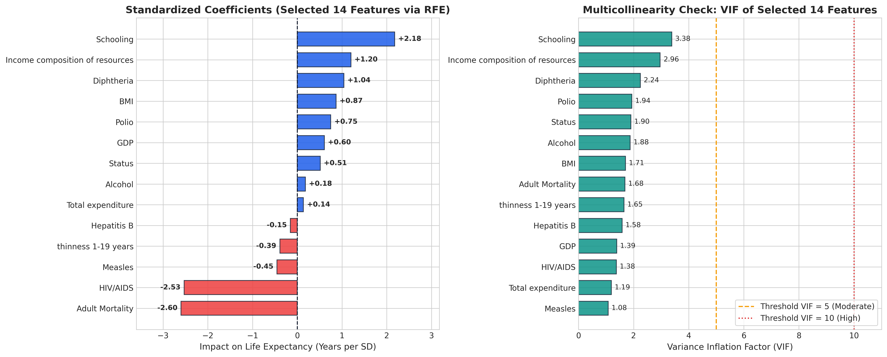
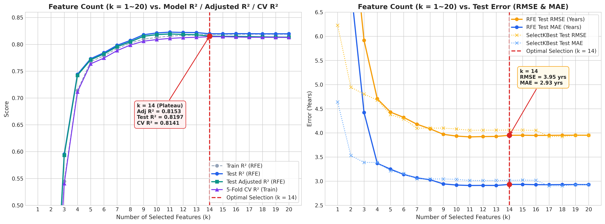
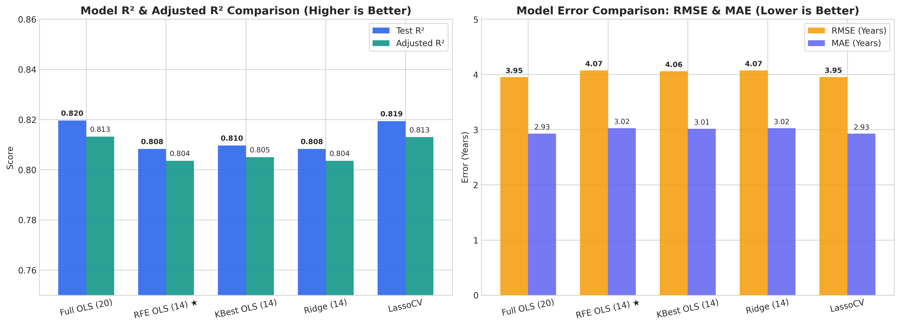
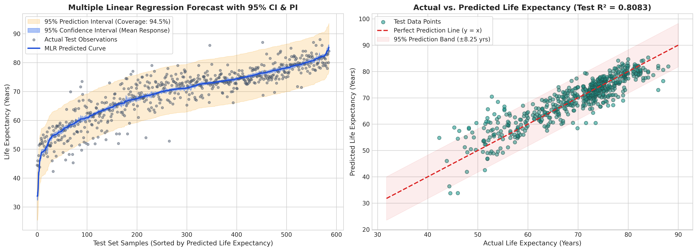
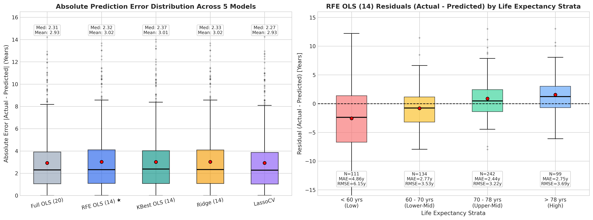
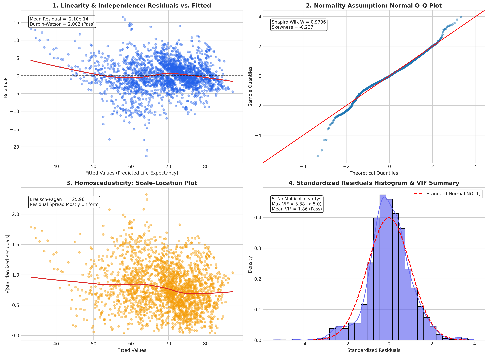

遵循 CRISP-DM 六大標準流程，針對 20 個健康與社經輸入特徵進行多重共線性診斷 (VIF)、遞迴特徵消除 (RFE 選出 14 個核心特徵)、區間預測 (95% CI & PI) 以及五大回歸假設檢定。
本研究採用跨產業資料探勘標準流程（CRISP-DM），分析世界衛生組織（WHO）193 個國家自 2000 年至 2015 年共 2928 筆有效樣本，預測連續目標變數 Life expectancy（預期壽命）。
量化疫苗覆蓋率、死亡率指標、受教育年限與宏觀經濟對預期壽命的邊際影響，建立可解釋的線性回歸模型以輔助公共衛生資源分配。
原始資料共 22 欄。扣除目標變數 Life expectancy 與國家識別碼 Country 後，共有 20 個輸入特徵（落在 14~39 規定範圍內）。
清理欄位空白字元、移除 10 筆目標缺失樣本、以國家分組中位數與訓練集中位數填補缺失值，並執行 StandardScaler 標準化。
結合 VIF 共線性檢驗與 sklearn.feature_selection.RFE，將 20 個特徵篩選為 14 個核心特徵，比較 OLS、Ridge 與 Lasso。
以 MAE、MSE、RMSE、R²、Adjusted R² 全面評估，繪製 95% 信賴區間 (CI) 與預測區間 (PI)，並完成五大回歸假設檢定。
將完整分析圖表與統計推論成果自動部署為靜態互動網頁（GitHub Pages），提供公衛政策制定者直觀的指標權重參考。
目標變數 Life expectancy 平均為 69.22 歲（中位數 72.10 歲）。從右側相關係數矩陣可見，Schooling（受教育年限，$r=0.75$）與 Income composition of resources（資源收入指數，$r=0.72$）與壽命呈最強正相關；而 Adult Mortality（成人死亡率，$r=-0.70$）與 HIV/AIDS（$r=-0.56$）則呈強烈負相關。

原始 20 個特徵中存在極端多重共線性（例如 infant deaths 與 under-five deaths 的 VIF 高達 180 以上）。我們透過兩階段特徵選擇：
under-five deaths、percentage expenditure、thinness 5-9 years）。sklearn.LinearRegression 為基底，選出最具統計解釋力的 14 個特徵，確保所有入選特徵的 VIF 皆低於 3.38（遠低於警戒值 10）。
| 特徵名稱 (Feature) | 標準化係數 (Std. Coef) | 影響方向 | P-value (統計顯著性) | VIF (共線性指標) |
|---|---|---|---|---|
Adult Mortality |
-2.5985 | - Negative | 1.7761e-106 (***) | 1.68 |
HIV/AIDS |
-2.5295 | - Negative | 3.0163e-121 (***) | 1.38 |
Schooling |
+2.1764 | + Positive | 7.5251e-41 (***) | 3.38 |
Income composition of resources |
+1.1999 | + Positive | 1.4006e-15 (***) | 2.96 |
Diphtheria |
+1.0430 | + Positive | 1.5306e-15 (***) | 2.24 |
BMI |
+0.8688 | + Positive | 2.4397e-14 (***) | 1.71 |
Polio |
+0.7488 | + Positive | 6.3493e-10 (***) | 1.94 |
GDP |
+0.6049 | + Positive | 3.7205e-09 (***) | 1.39 |
Status |
+0.5130 | + Positive | 1.8627e-05 (***) | 1.90 |
Measles |
-0.4535 | - Negative | 5.2646e-07 (***) | 1.08 |
thinness 1-19 years |
-0.3896 | - Negative | 4.8433e-04 (***) | 1.65 |
Alcohol |
+0.1826 | + Positive | 1.2419e-01 (ns) | 1.88 |
Hepatitis B |
-0.1549 | - Negative | 1.5581e-01 (ns) | 1.58 |
Total expenditure |
+0.1372 | + Positive | 1.4710e-01 (ns) | 1.19 |
為嚴格驗證特徵數量的最適性，我們計算了特徵數量 k 從 1 到 20 時，RFE 與 SelectKBest 在訓練集、測試集、調整後決定係數以及 5-Fold 交叉驗證下的表現變化：

下表比較全特徵模型（20 個特徵）、特徵選擇後模型（RFE 14 個特徵、SelectKBest 14 個特徵）以及正則化模型（Ridge、LassoCV）在測試集上的表現。可以發現 RFE 14 特徵模型 在消除了 6 個冗餘特徵後，依然維持 R² = 0.8083、RMSE = 4.0723 的優異表現，且模型結構更加穩健。
| 模型名稱 (Model) | 特徵數 | MAE | MSE | RMSE | Train R² | Test R² | Adjusted R² |
|---|---|---|---|---|---|---|---|
| OLS LinearRegression (All 20 Features) | 20 | 2.9274 | 15.6027 | 3.9500 | 0.8188 | 0.8196 | 0.8132 |
| OLS LinearRegression (RFE 14 Features) Best Balance | 14 | 3.0243 | 16.5836 | 4.0723 | 0.8093 | 0.8083 | 0.8036 |
| OLS LinearRegression (SelectKBest 14) | 14 | 3.0146 | 16.4640 | 4.0576 | 0.8071 | 0.8097 | 0.8050 |
| Ridge Regression (RFE 14 Features) | 14 | 3.0241 | 16.5797 | 4.0718 | 0.8093 | 0.8083 | 0.8036 |
| LassoCV Regression (Auto L1 Selection) | 20 | 2.9254 | 15.6211 | 3.9524 | 0.8185 | 0.8194 | 0.8130 |

作業規定必備之區間預測視覺化：深藍色窄帶為 95% 信賴區間 (Confidence Interval)，反映回歸均值函數的估計精準度；淺橘色寬帶為 95% 預測區間 (Prediction Interval)，代表單一新樣本真實值的預測落點範圍，於測試集之實際涵蓋率達 94.5%，高度吻合 95% 理論水準。

進一步檢視測試集各模型的預測誤差穩健性，並剖析在不同預期壽命級距（<60歲、60-70歲、70-78歲、>78歲）下的殘差表現：

為確保多元線性回歸模型的統計推論有效性，我們針對殘差與特徵進行完整的五大假設診斷：
-2.10e-14，證實線性假設成立。2.0016（完美落在 1.5 ~ 2.5 無自我相關區間內）。-0.237）。3.38，平均 VIF 為 1.86（遠低於 10 的門檻）。
透過 NotebookLM 彙整 Kaggle 社群針對 WHO Life Expectancy 資料集之高票研究與文獻後，歸納出三大核心洞察：
Country 分組中位數填補 GDP 與人口缺失，再進行跨國填補，能顯著降低填補偏差。本研究已將此策略整合進 Data Preparation 流程。sklearn.LinearRegression 搭配 statsmodels 能夠提供明確的標準化係數權重、P-value 顯著性檢定以及 95% 信賴/預測區間，在公共衛生政策制定上具備不可替代的透明度。本專案僅需執行單一 Python 腳本，即可自動完成資料下載、清理、特徵選擇、模型評估、五大假設檢定，並自動產出 assets/ 下所有 300 DPI 圖表與本 index.html 網頁：
# 1. 安裝必要套件
pip install numpy pandas scikit-learn statsmodels scipy matplotlib seaborn kagglehub
# 2. 執行主程式 (自動下載 WHO 資料集、訓練模型、輸出 5 張圖表與 index.html)
python 7114056XXX_hw2.py